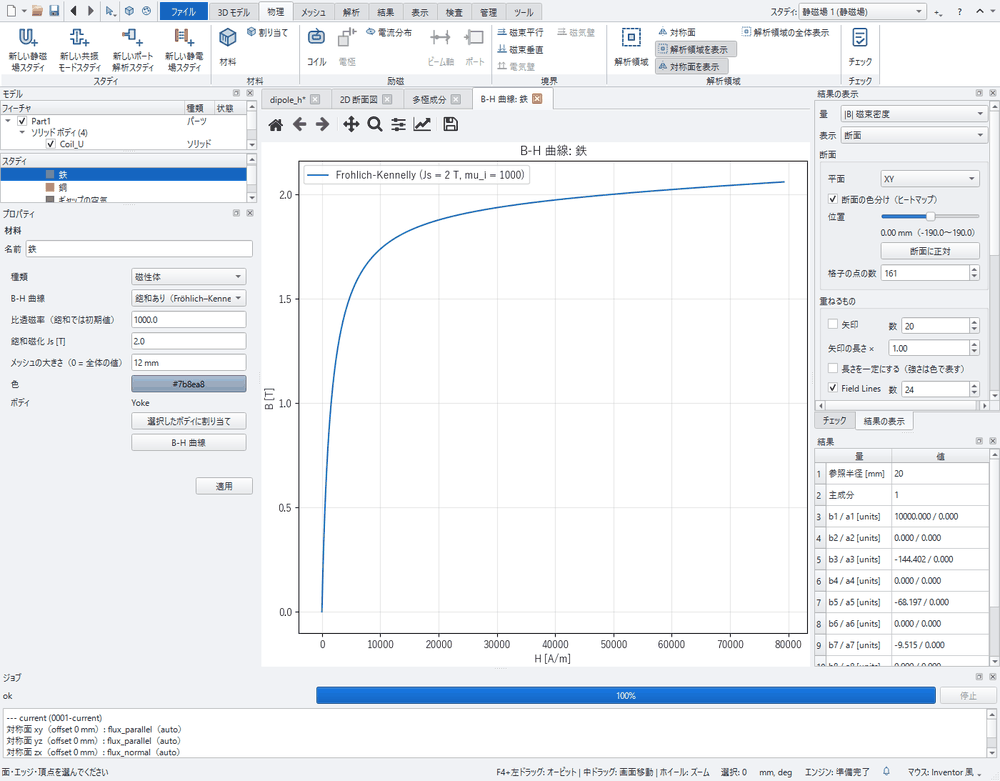
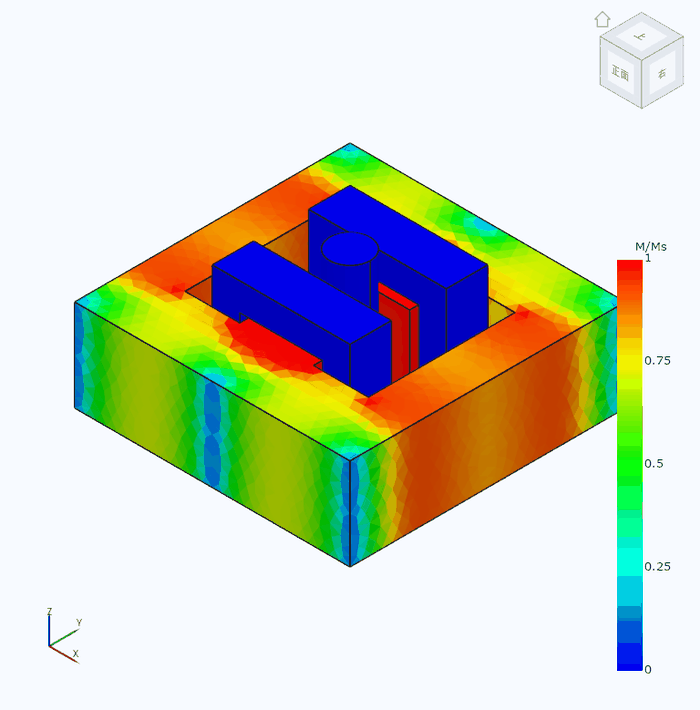

第 18 章
静磁場解析
静磁場 この章では、静磁場のスタディの設定と結果を説明します。材料（空気・磁性体・導体）と鉄の飽和、解析領域、対称面の境界、磁気エネルギー・インダクタンス・多極成分です。コイルの設定は第 19 章、例題は第 15 章（ソレノイド）と第 20 章（H 型双極電磁石）にあります。
18.1 静磁場のスタディ
コイルの直流の電流がつくる磁場を、ベクトル ポテンシャル A の有限要素法（2 次の辺要素）で解きます。形状のまわりの空気は自動で作るので、自分で作るのは鉄・コイルなどのボディだけです。
リボンの［物理］タブ → ［スタディ］パネル → ［新しい静磁場スタディ］で作ります。最初から材料「空気」・解析領域・メッシュ・解析の設定が入っています。
スタディのブラウザのフォルダは、材料・領域・コイル・境界条件・解析領域・対称・メッシュ・解析の設定・結果です。
静磁場のスタディで使えるコマンドは、［コイル］・［電流分布］・［磁束平行］・［磁束垂直］・［解析領域］・［多極成分］などです。
18.2 材料
| 欄 | 内容 |
|---|---|
| ［種類］ | 空気・磁性体・導体（コイル） |
| ［B-H 曲線］ | （磁性体のとき）線形（比透磁率一定）・飽和あり（Fröhlich–Kennelly）・B-H の表（下） |
| ［比透磁率］ | μr（磁性体のときだけ。空気・導体は 1）。飽和ありでは初期比透磁率 |
| ［メッシュの大きさ（0 = 全体の値）］ | この材料のボディの中の要素の大きさ。0 なら全体の値 |
空気: μr = 1。メッシュを細かくしたい空気の場所（ギャップなど）に、別の名前の空気の材料を作って使います。
磁性体: 鉄など。強い磁場で飽和するなら、B-H 曲線を飽和ありか B-H の表にします。
導体（コイル）: コイルのボディ用（μr = 1）。電流はコイルの設定で流します（第 19 章）。
永久磁石は、まだ材料の種類にありません。
磁性体の飽和（B-H 曲線）
鉄は強い磁場で飽和し、比透磁率が下がります。磁性体の材料の［B-H 曲線］で次から選びます。
| B-H 曲線 | 入れる値 | 使う所 |
|---|---|---|
| 線形（比透磁率一定） | 比透磁率 μr | 飽和しない弱い磁場。計算が 1 回で済みます |
| 飽和あり（Fröhlich–Kennelly） | 初期比透磁率 μi と飽和磁化 Js [T]（純鉄で約 2.1 T） | 材料のデータが無いときの目安 |
| B-H の表 | 1 行に「H [A/m] B [T]」（空白・カンマ・タブ区切り。# から後は注釈）。H・B はどちらも増える順 | 鋼材のカタログ値など |
フォームの［B-H 曲線］のボタンで、今の値の曲線を中央のグラフのタブに描けます（［適用］の前でも描けます）。
表の最後の点より先は、傾き μ0（空気と同じ増え方）で延ばします。表は飽和まで（2 T 付近まで）書いてください。
飽和のある材料があると、解析はニュートン法の反復になります（ジョブのログに 1 回ごとの残差が出ます）。収束の判定と反復の上限は、リボンの［解析］タブ → ［設定］パネル → ［解析の設定］で変えられます。
結果の表に、非線形の反復回数と最大の飽和度 M/Ms（1 に近いほど飽和）が出ます。




18.3 解析領域
形状のまわりの空気は自動で作られます。リボンの［物理］タブ → ［解析領域］パネル → ［解析領域］で、形（箱・円柱）と大きさを変えられます。外面は磁束平行です。外面が近すぎると、磁場が押し込められてエネルギー・インダクタンスが大きめになるので、余白はモデルの大きさの 2〜3 倍以上にします。
| サイズ | 箱 | 円柱 |
|---|---|---|
| モデルの大きさに対する比 | モデルの外接箱の最も長い辺 × 比 を、各方向に足す（既定 3） | |
| 方向ごとの余白 | 余白 −X・+X・−Y・+Y・−Z・+Z [mm] | 余白 R（半径方向）と軸方向の余白 [mm] |
| 座標 | X・Y・Z の最小・最大 [mm] | 半径 R と軸方向の最小・最大 [mm] |
円柱の軸は、自動（最初のループのコイルの軸）か、X・Y・Z を選びます。
［外側の要素の大きさ（0 = 自動）］は、外面の要素の大きさです（0 は自動）。モデルの外では、全体の要素の大きさからこの大きさへ、だんだん粗くなります。
［今の大きさを座標に写す］で、今の範囲を座標の欄に入れられます。そこから面ごとに動かせます。
解析領域はモデルの数倍の大きさなので、全体表示はモデルだけに合わせます。［解析領域の全体表示］で、領域の全体が入るようにズームします。
18.4 対称面の境界
| 境界 | 意味 | 使う所 |
|---|---|---|
| 磁束平行（n×A = 0） | 磁力線が面に沿う。電流は面を垂直に横切る | コイルの軸を含む面 |
| 磁束垂直（n×H = 0） | 磁力線が面を垂直に横切る。電流は面に沿う | コイルの軸に垂直な中央の面 |
| 自動 | コイルの軸から上の規則で決める | すべてのコイルがループで、軸が平行、向きがそろうとき |
対称面の板は、境界の種類で色が変わります（緑が磁束平行、青が磁束垂直）。［自動］で決められないときは橙になります（そのまま実行するとエラー）。そのときは境界を手で選びます。
面の境界条件（［磁束平行］・［磁束垂直］）は、選んだ面に同じ境界を付けます。ふつうは対称面と解析領域で足りるので、使う必要はありません。
18.5 静磁場の結果
結果の表示の操作は第 17 章のとおりです。静磁場の結果の表には、次の値が出ます。値はどれも、対称の倍数を掛けたモデル全体の値です。
| 量 | 内容 |
|---|---|
| 磁気エネルギー W [J] | モデル全体のエネルギー |
| インダクタンス L | コイルが 1 つのとき。L = 2W / I² = Ψ / I（単位は H・mH・μH・nH を値に合わせて選びます） |
| 磁束鎖交 Ψ [Wb] | コイルの条件ごと |
| インダクタンス行列・結合係数 | コイルの条件が 2 つ以上で、求める設定にしたとき（第 19 章） |
| 反復回数・最大の飽和度 | 飽和のある材料があるとき |
多極成分
リボンの［結果］タブ → ［評価］パネル → ［多極成分］をクリックし、参照半径（例 20 mm）を入れます。モデルの中心の XY 面の円の上で B を求め、By + iBx = Σ (Bn + iAn)(z/Rref)n−1 に分けて、主成分を 10000 とした単位（units）で表とグラフに出します。ビームの軸は z です。
コイルに使った電流の分布は、リボンの［結果］タブ → ［表示］パネル → ［電流］で矢印で見られます（ボディは透明になります）。